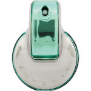

返回列表
产品名称：ブルガリ オムニア パライバ オードトワレ

ウエニ貿易 ブルガリ オムニア パライバ オードトワレ ４０ｍＬ
メーカー ウエニ貿易
JANコード 4548962727420
商品の特徴
希少なパライバ（トルマリン）からインスパイアされたフレグランスです。
フローラルフルーティの香りです。
成分・分量
【成分】
変性アルコール、香料、水、メトキシケイヒ酸エチルヘキシル、ｔ－ブチルメトキシジベンゾイルメタン、サリチル酸エチルヘキシル、ＢＨＴ
用法及び用量
【使用方法】
手首ひじかたなどに適量スプレーしてお使いください。